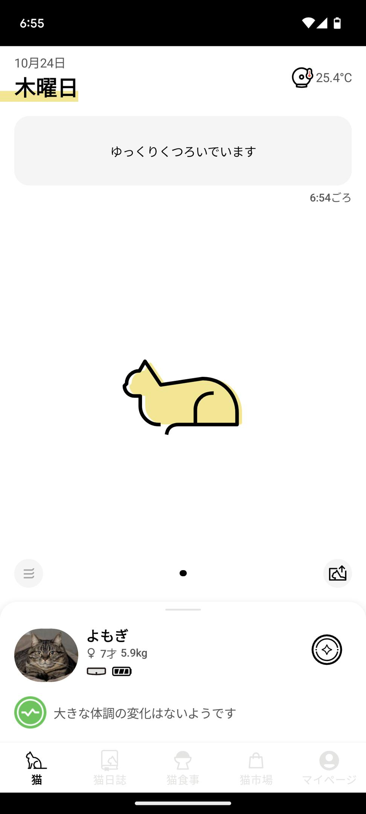

キャトログ ペンダントという、猫の首輪を導入した。これを使うと猫のとった行動を記録でき、食事や水飲み、トイレのタイミングや頻度などを計測できるから健康管理に役立つというもの。
使ってみた印象としては、精度が普通にあまり良くないので割と要らなかったなという感じがしてる。 色々調べた感じ首輪の中にIMUが入っていて、加速度とか角速度の変化から動いてないとか走ってるとか水を飲んでるとかを判定してるらしい。普通に考えてこれで精度が出るはずがないよなと思う。機械学習でやってると強調しているけど、教師データもちゃんと作れないのではないか。やたら値下げして売ってるからなんでかなと思ったけど、プロダクトの良くなさからくる自信のなさではないかと思った。
アプリの見せ方も微妙だと思っていて、このアプリは開いた瞬間に「いま猫は寝てます」とか「水を飲んでます」と出てくるのだが、これが合ってないことが多い。これが合ってないとかなり信用できないなという印象になるので、もっと大体合ってる的なイメージにしたほうがいいのではないかと思った。
猫の飼育環境は家によって様々だし、IMUだけだと普通に姿勢を間違えるだろうから仕方ないような気もする。ちゃんとやるならGPSやカメラ、マイクが必要だと思うが、家庭で使うことやセンサのバッテリー、猫に与えるストレスも考えるとこうなったのもわからなくない（IMUだけで判定してるというのはネットで調べた情報なので、もしかしたら違うかも）。いずれにせよ大して使える製品ではなく、特におすすめも今のところできないがせっかく買ったのでもう少し使う予定。